K562 Neither DNase matched - State 2:TssF (n=37)
K562 Neither DNase matched - State 2:TssF (n=37)
[
See group descriptions
]
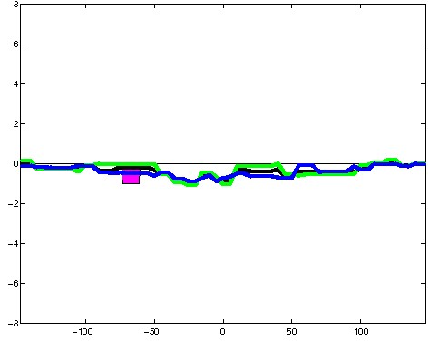
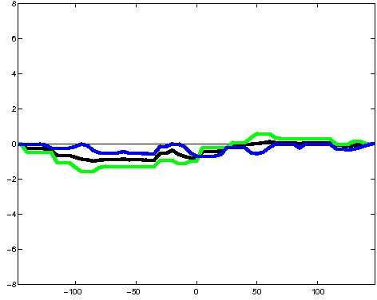
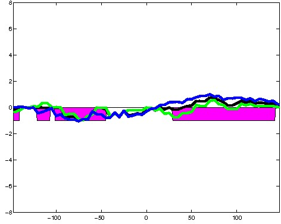
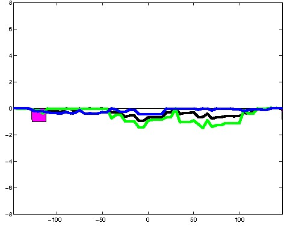
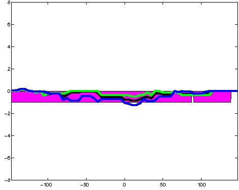
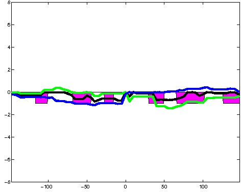
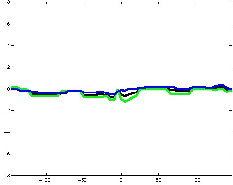
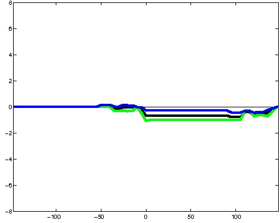
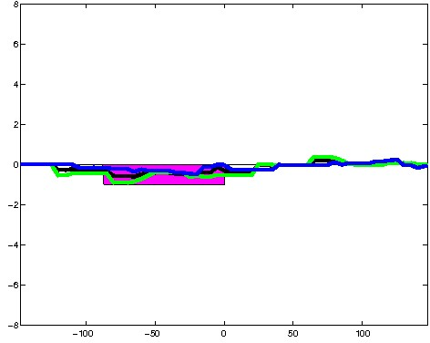
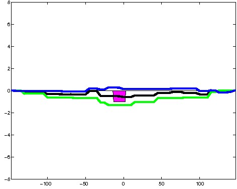
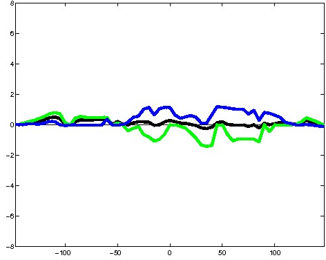
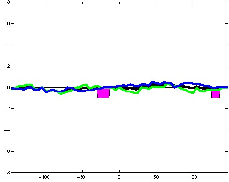
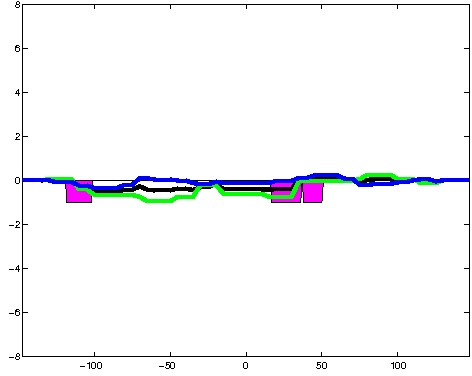
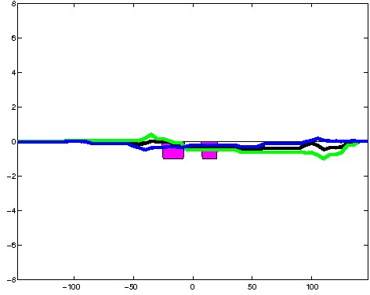
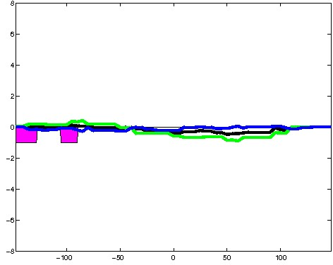
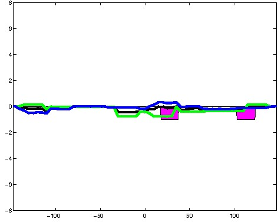
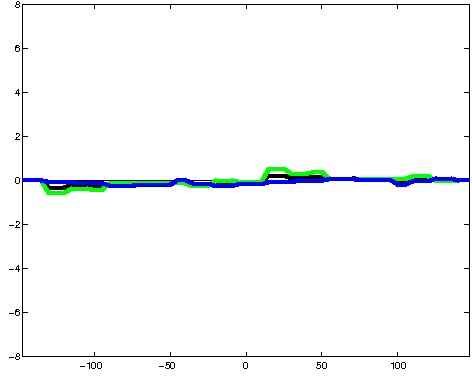
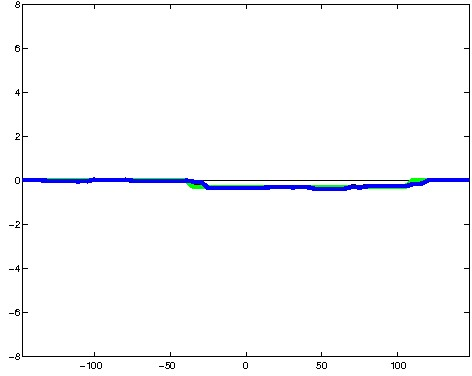
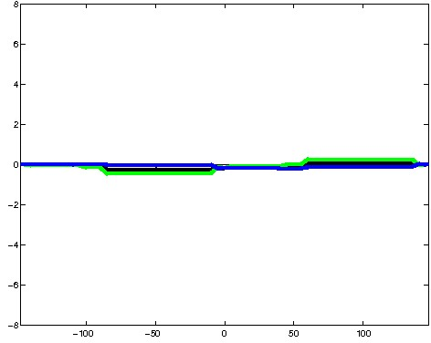
; picked in K562 (state 2:TssF, DNase); matched; chr4:100,008,049-100,008,343 (295bp)") 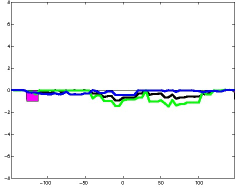
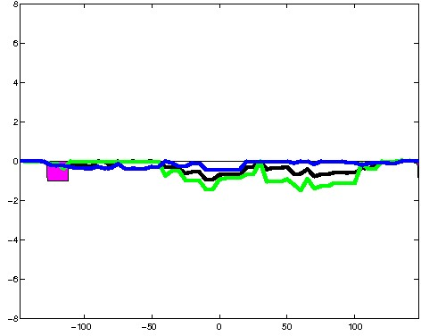
; picked in K562 (state 2:TssF, DNase); matched; chrX:151,145,569-151,145,863 (295bp)")
; picked in K562 (state 2:TssF, DNase); matched; chr9:136,281,809-136,282,103 (295bp)") 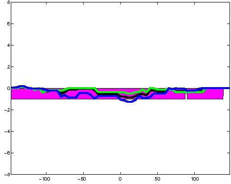
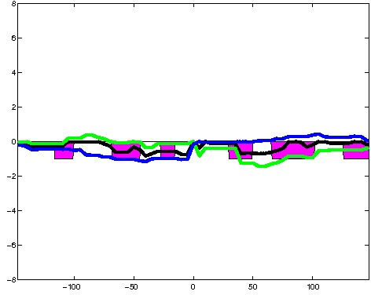
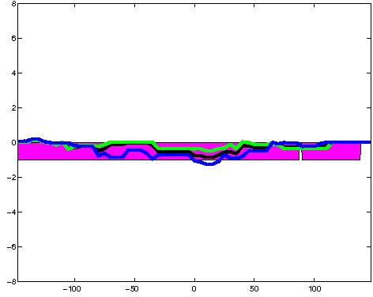
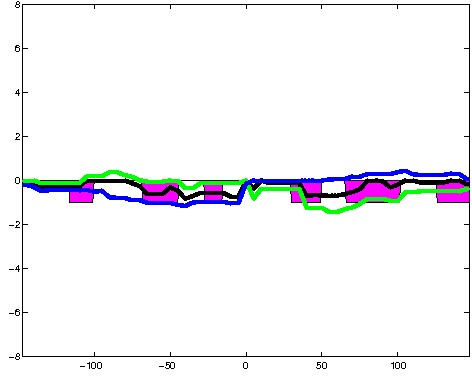
; picked in K562 (state 2:TssF, DNase); matched; chr11:38,358,729-38,359,023 (295bp)")
; picked in K562 (state 2:TssF, DNase); matched; chr5:43,309,869-43,310,163 (295bp)") 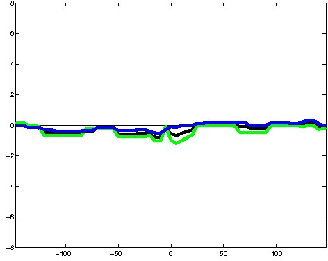
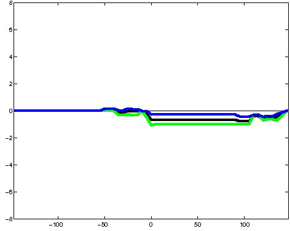
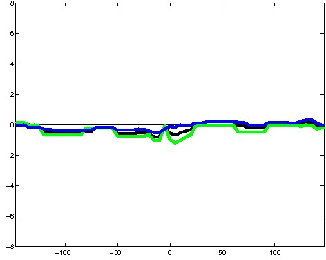
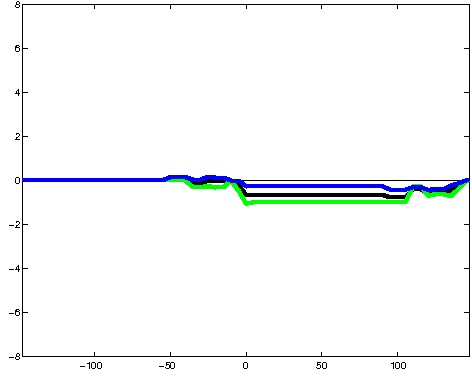
; picked in K562 (state 2:TssF, DNase); matched; chr7:43,097,749-43,098,043 (295bp)")
; picked in K562 (state 2:TssF, DNase); matched; chr8:129,567,429-129,567,723 (295bp)") 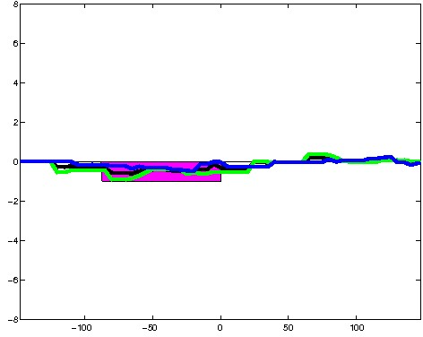
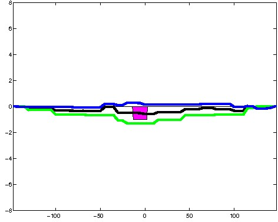
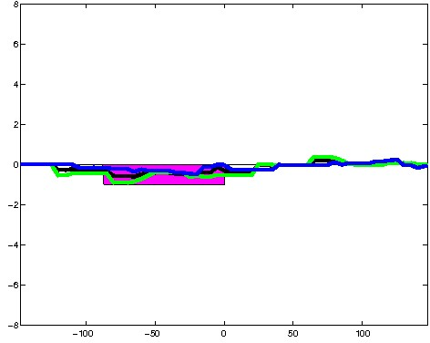
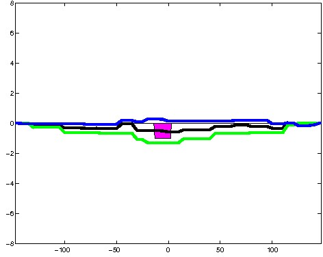
; picked in K562 (state 2:TssF, DNase); matched; chr1:155,530,369-155,530,663 (295bp)")
; picked in K562 (state 2:TssF, DNase); matched; chr16:74,872,669-74,872,963 (295bp)") 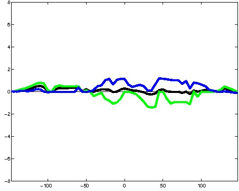
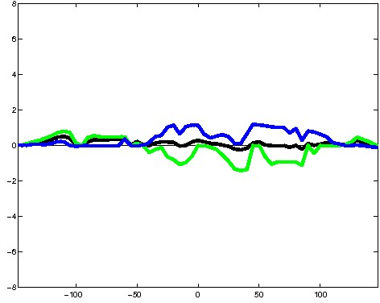
; picked in K562 (state 2:TssF, DNase); matched; chr5:67,584,529-67,584,823 (295bp)") 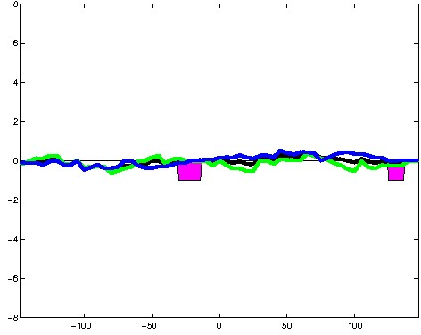
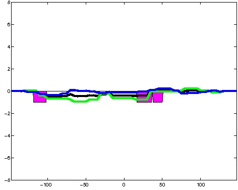
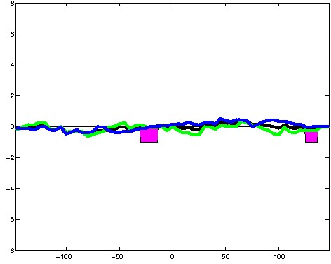
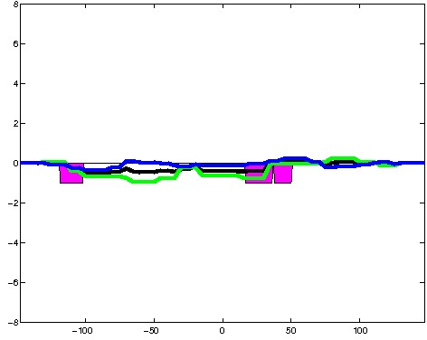
; picked in K562 (state 2:TssF, DNase); matched; chr15:28,539,169-28,539,463 (295bp)")
; picked in K562 (state 2:TssF, DNase); matched; chr11:119,075,849-119,076,143 (295bp)")
; picked in K562 (state 2:TssF, DNase); matched; chr9:34,151,989-34,152,283 (295bp)") 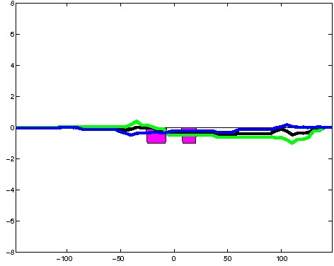
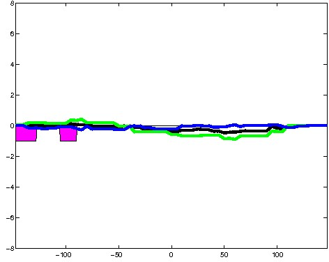
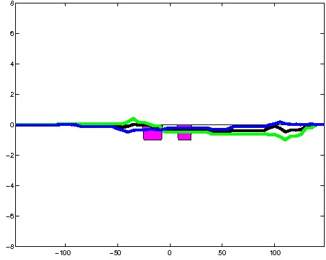
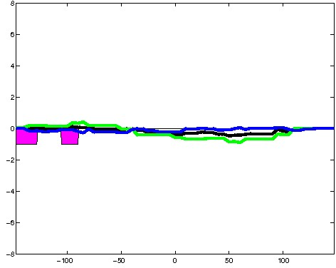
; picked in K562 (state 2:TssF, DNase); matched; chrX:40,503,489-40,503,783 (295bp)") 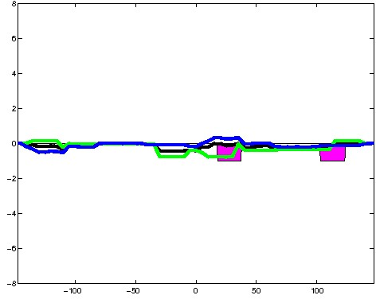
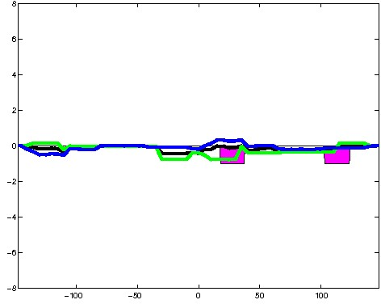
; picked in K562 (state 2:TssF, DNase); matched; chr6:91,294,629-91,294,923 (295bp)")
; picked in K562 (state 2:TssF, DNase); matched; chr5:54,605,449-54,605,743 (295bp)") 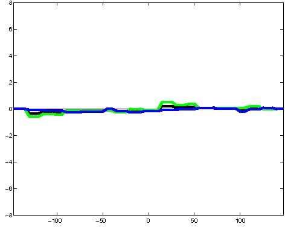
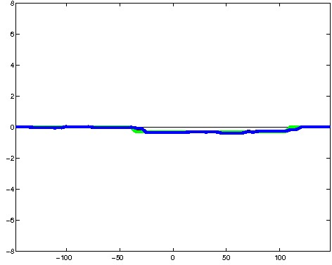
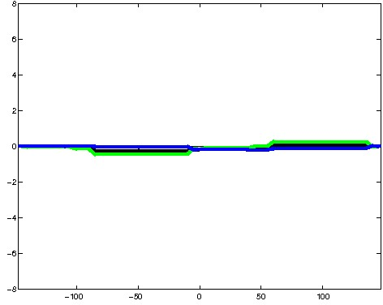
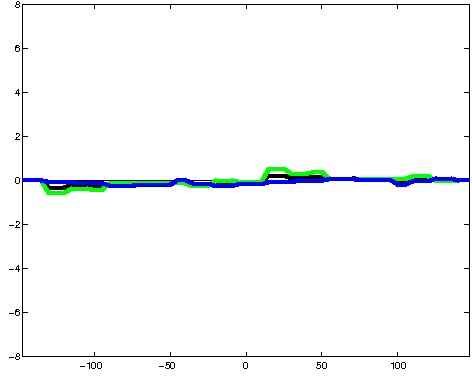
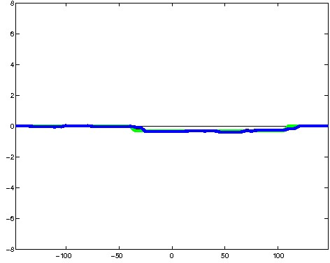
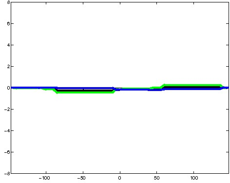
; picked in K562 (state 2:TssF, DNase); matched; chr6:26,121,449-26,121,743 (295bp)")
; picked in K562 (state 2:TssF, DNase); matched; chr1:93,650,149-93,650,443 (295bp)")